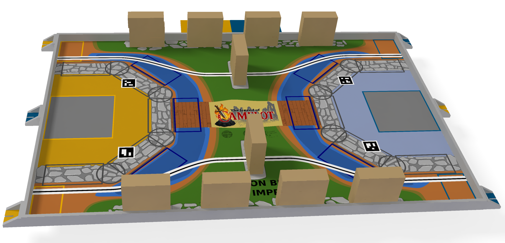

⚙️
Pôle mécanique
Châssis, actionneurs, préhenseurs. CAO, puis fabrication au X-Fab : impression 3D, découpe laser, CNC.
La Coupe est le rendez-vous de référence de la robotique étudiante en France. RobotX se structure pour y engager une équipe de l'X : concevoir, fabriquer et faire jouer un robot autonome face aux meilleures équipes du pays.
Chaque édition propose un nouveau thème de jeu. Les équipes conçoivent des robots autonomes qui accomplissent des missions sur une table de jeu pendant un match chronométré. Il faut de la mécanique, de l'électronique embarquée, de la stratégie et de la fiabilité, le tout dans un cahier des charges strict.
La Coupe de France de robotique est organisée par l'association Planète Sciences. Règlement, calendrier et thème de l'édition en cours sont publiés sur le site officiel.

Une équipe répartie en pôles, des machines de fabrication sur le campus et un calendrier clair.
Châssis, actionneurs, préhenseurs. CAO, puis fabrication au X-Fab : impression 3D, découpe laser, CNC.
Cartes de puissance et de commande, capteurs, gestion de l'énergie.
Localisation, asservissement, évitement d'obstacles, stratégie de match et simulation.
Analyse du règlement officiel, choix des architectures, CAO et premières maquettes.
Prototypes au X-Fab, cartes électroniques, câblage et premiers déplacements du robot.
Matchs d'entraînement sur la reproduction du tapis de jeu, fiabilisation, réglage de la stratégie.
Participation à l'événement sous les couleurs de l'X.
Estimations préliminaires, affinées au fil de la conception.